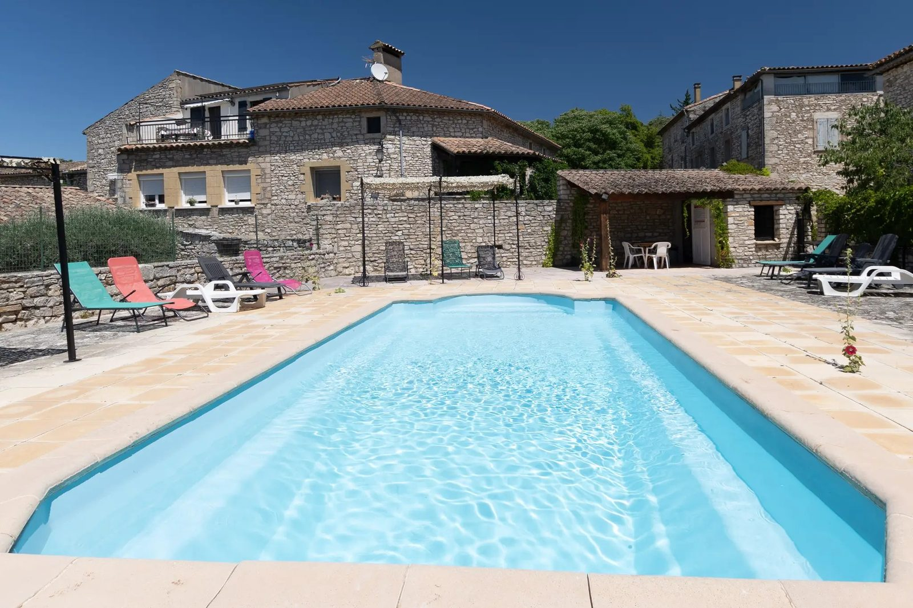
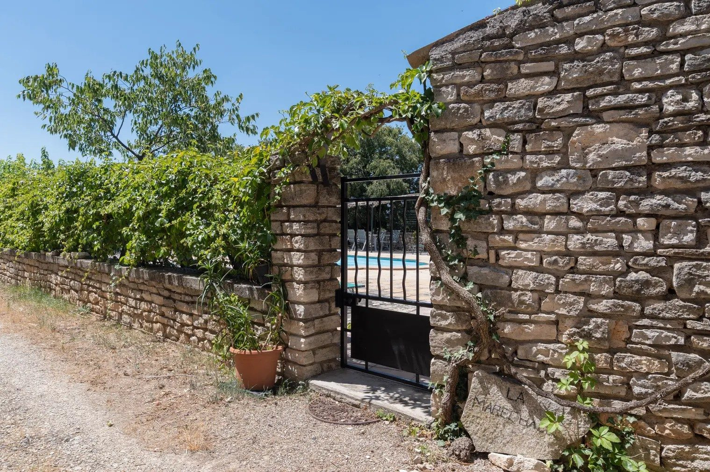
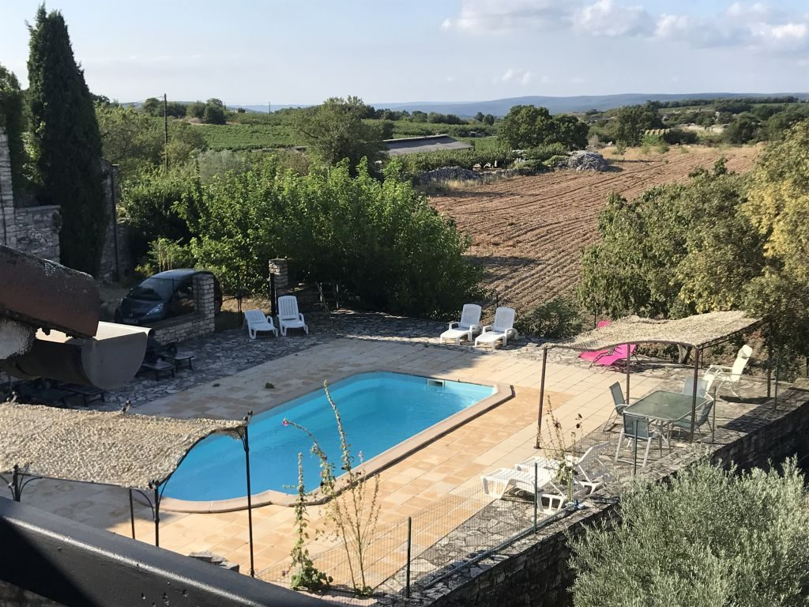
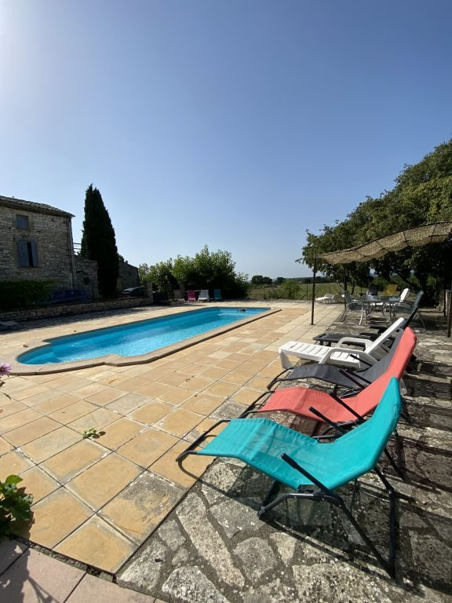
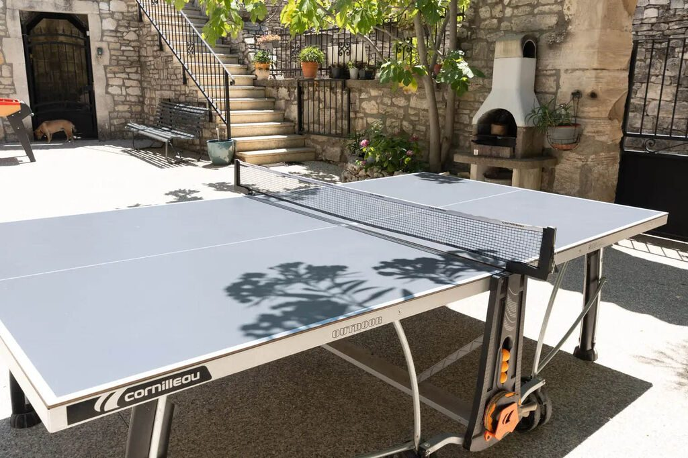
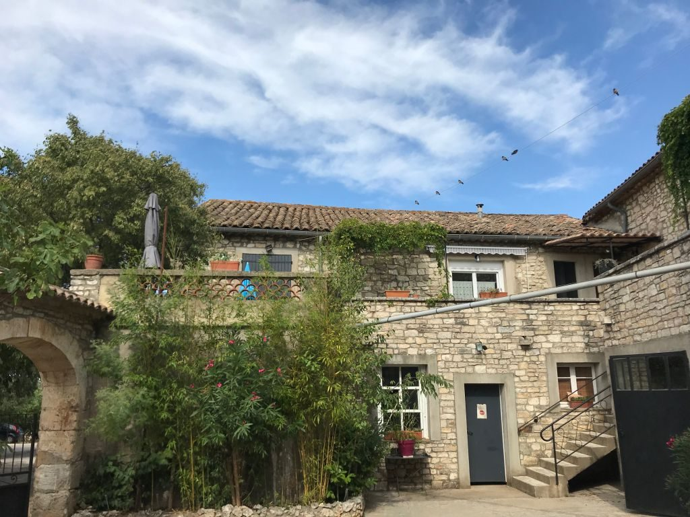
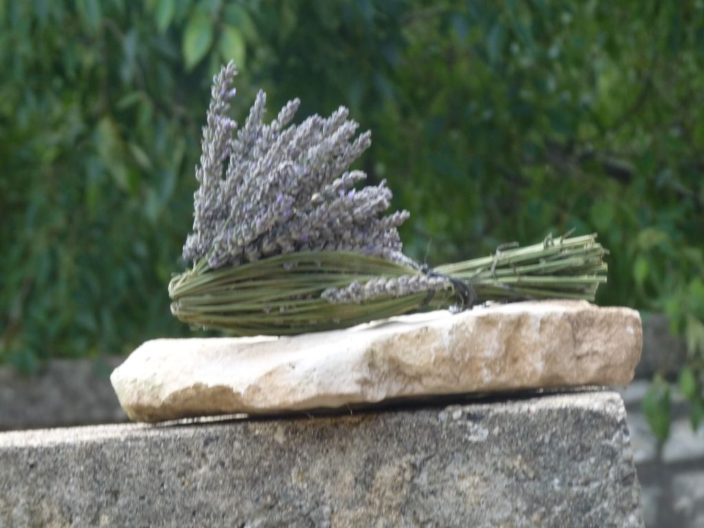
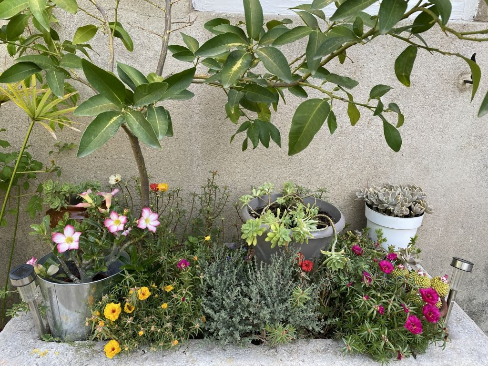
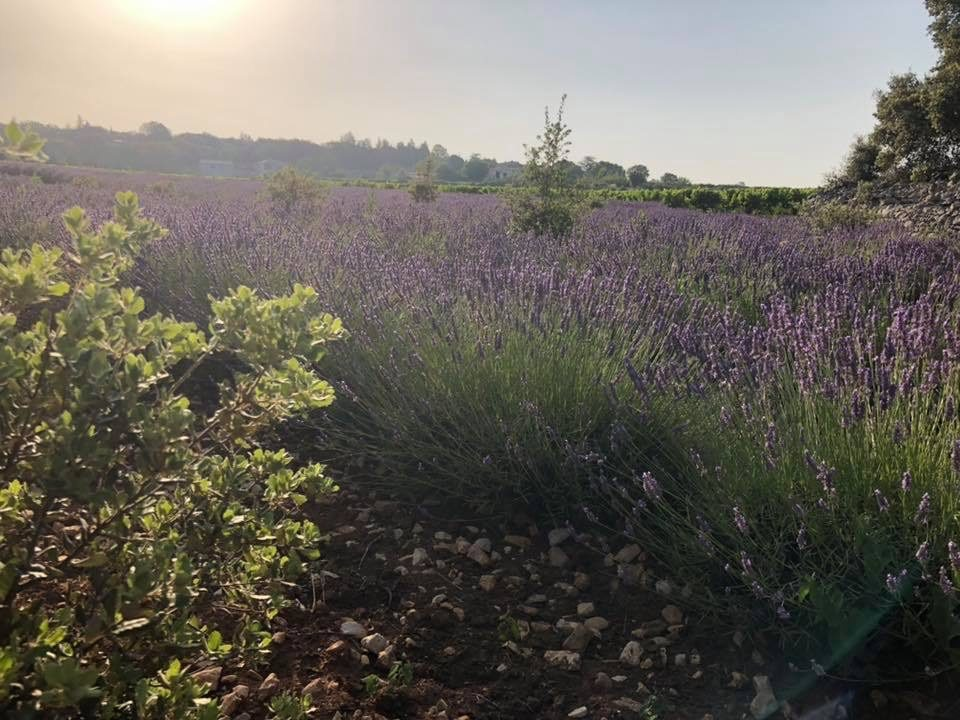

La Maréchale, quatre gîtes en Ardèche du Sud
Un mas en pierre avec piscine à Orgnac-l’Aven, au milieu des vignes, à 15 km de Vallon-Pont-d’Arc et des gorges de l’Ardèche.
Découvrez nos quatre gîtes
 1er étage
1er étageLe Micocoulier
Un séjour de 26 m² et une double terrasse sous la vigne vierge.
 1er étage
1er étageLa Magnanerie
L’accès direct à la cour fermée, où les enfants jouent en toute liberté.
 1er étage
1er étageChez Mémé
Deux entrées indépendantes et une terrasse de 18 m² avec son store.
 2e étage
2e étageLe Bellevue
Sous les toits, plein sud, avec la vue sur la piscine et la campagne.



La piscine, la cour et les vignes autour
Le mas de La Maréchale est au cœur d’une propriété de plusieurs hectares, à deux minutes du centre du village. La piscine clôturée de 9 mètres sur 4 a un coin de transats pour chaque gîte.
Les enfants ont la cour fermée, la salle de jeux avec ping-pong et baby-foot, des vélos et le terrain de boules à l’ombre des arbres.
Visiter le masCompris dans le séjour



Une famille d’agriculteurs qui aime recevoir
La famille Duffes vit et travaille ici. Nathalie, l’aînée, formatrice en hôtellerie et restauration, s’occupe de la grande maison et des locations. Christel, la cadette, cultive les vignes et les arbres fruitiers avec ses fils.
Le mas a été rénové en grande partie de leurs mains, avec des artisans du coin qui respectent le bâti ancien. L’eau chaude vient des panneaux solaires.
La vie au mas
4,7 sur 5 sur Google
« Très chouette séjour avec enfants chez Nathalie à la Maréchale. Notre hôte était très disponible, avenante et de bons conseils. Le gîte avec piscine est fidèle aux photos et possède le charme des vieilles bâtisses. »
« Nous avons passé un très chouette séjour chez Nathalie. Nos enfants de 1,5 et 2,5 ans ont particulièrement apprécié la salle de jeux, la piscine ainsi que l’espace extérieur où ils ont pu faire du vélo. »
« Séjour de 15 jours chez Mémé et Bellevue en famille. Logement tout confort, salle de jeux, table de ping-pong, baby-foot à disposition. Nathalie très accueillante, sympathique et disponible. »
Les activités à voir

Le Pont d’Arc
Vallon-Pont-d’Arc, à 15 km
L’Aven d’Orgnac
Grand Site de France, à deux pas
Les gorges de l’Ardèche
La route des belvédères
Les cascades du Sautadet
Dans la vallée de la Cèze
Balazuc
Village de caractère
La Roque-sur-Cèze
Village perché
Les champs de lavande
Juin et juilletPhotos de la région : Wikimedia Commons. Le Pont d’Arc : "dronepicr" (CC BY 2.0) · L’Aven d’Orgnac : Jacques Le Letty (CC BY-SA 4.0) · Les gorges de l’Ardèche : Superbass (CC BY-SA 4.0) · Les cascades du Sautadet : Einaz80 (CC BY-SA 4.0) · Balazuc : Bernard CONSTANT (CC BY-SA 4.0) · La Roque-sur-Cèze : Jacques Le Letty (CC BY-SA 4.0) · Les champs de lavande : MAIRIE DE LARNAS (CC BY-SA 4.0).

Un été entre la piscine et les gorges de l’Ardèche
Choisissez votre gîte ou réservez-en plusieurs pour venir en famille. Nathalie vous répond elle-même.
Parlons de vos dates
Nathalie s’occupe des réservations. Le plus simple est de l’appeler ; sinon, laissez-lui vos dates et elle vous rappelle.
Avant de réserver
Combien de personnes pouvez-vous accueillir ?
Chaque gîte accueille jusqu’à 5 personnes. Le mas compte quatre gîtes : en famille ou entre amis, vous pouvez réserver plusieurs appartements et venir jusqu’à 20.
Quand la piscine est-elle ouverte ?
La piscine (9 m sur 4, de 0,70 m à 1,70 m de profondeur) est remplie pour les mois de juillet et d’août. Elle est clôturée et chaque gîte a son coin de transats.
Les animaux sont-ils acceptés ?
Oui, gratuitement, sur demande et avec l’accord de Nathalie : deux animaux au plus par appartement, chiens non catégorisés.
Le linge de maison est-il fourni ?
Non, mais il peut l’être en supplément : il suffit de le demander au moment de la réservation.
Y a-t-il le wifi ?
Oui, gratuit, sur demande. Il est accessible à l’extérieur des appartements.
Comment réserver ?
Appelez Nathalie au 06 70 46 64 61 ou envoyez une demande avec le formulaire : elle vous répond avec les disponibilités et le tarif de vos dates.